Final
Sound on · headphones for the panning
Introduction
For A3 I chose option (b): rework my A2 kinetic type motion graphic with a new, original, multi-layered soundtrack. The A2 music is gone and everything you hear was built from scratch in Premiere Pro, from royalty-free sounds and my own Foley.
The piece reads like the opening titles of a dark dystopian film: DYNEMA PRESENTS, COMMERCIAL, MOTION GRAPHICS, THE END OF MEDIA, IN A WORLD, HUNGER, BUILT UPON, DESTRUCTION, DEVASTATION. ‘IN A WORLD’ is classic movie-trailer language, so I treated the whole thing as a title sequence / teaser and designed the sound around that genre.
The picture runs 38.8 s. The final runs 0:43 because the sound rings on over black after the last cut (an L-cut).
Genre & exemplars
Se7en
Kyle Cooper (R/GA). A scratchy, industrial remix of Nine Inch Nails’ ‘Closer’ tightly synced to jittery type and cuts. Watch on Art of the Title ↗
Title sequence · 2016Stranger Things
Imaginary Forces, music by Kyle Dixon & Michael Stein. A minimal synth score building tension under very slow type. Watch on Art of the Title ↗
From Se7en I took the opening half of my piece: hard hits and glitch cuts on every type slam (DYNEMA, COMMERCIAL, the cut to white) with a projector rattle and industrial room tone underneath, so the sound feels as jittery as the type.
From Stranger Things I took the slow half: BUILT UPON drifts in on a riser and a heartbeat while the music is pulled right down, so the tension comes from very little.
Because the piece literally says IN A WORLD, I also borrowed movie-trailer sound language: braams, risers and a drop to silence just before the RED slam.
Techniques, media & tools
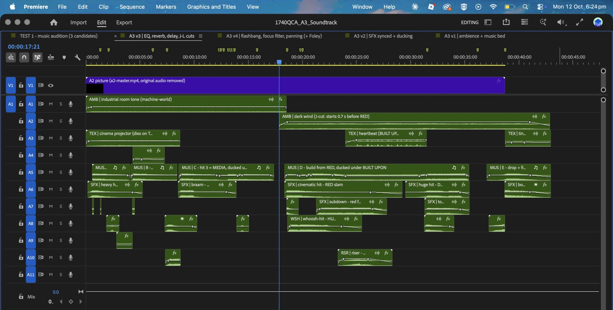
Everything was built in Adobe Premiere Pro 2026. One project holds a sequence for every version (A3 v1, v2, v3, v4, TEST 1 and the final), all 1920×1080, 24 fps, 48 kHz stereo, exported as H.264 with AAC audio. I sketched a first prototype in After Effects, where the A2 piece lives, then rebuilt the edit in Premiere as the brief asks, with every effect applied and checked in Effect Controls. Every version on this page is a Premiere export.
Before placing any sound I made a sync map of the A2 export, frame by frame: DYNEMA slams in on frame 14, the cut to white is at 4.33 s, RED at 18.58 s, the light flash at 31.54 s and the cut to black at 38.75 s. Every hit is placed from that map.
Premiere tools used: keyframed Volume for fades and ducking, Panner Balance keyframes, Simple Parametric EQ, Highpass, Lowpass (keyframed in v4), Delay, Studio Reverb, and Paste / Remove Attributes to copy effect settings between clips.
All third-party sounds come from Pixabay, searched with the Authentic only filter so nothing AI-generated could come up (screenshot in Credits). Every pick is credited to a named sound designer or a Freesound field recordist. The Foley is my own phone recordings.
Soundtrack layers
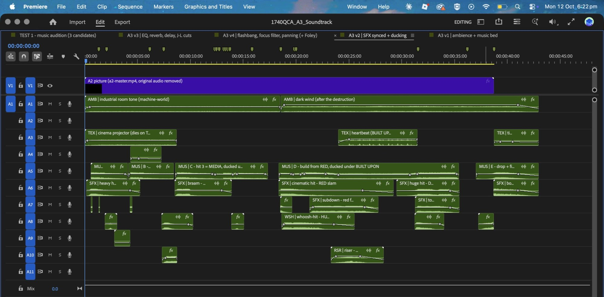
| Layer | What it is in this piece |
|---|---|
| Ambience / room tone | Industrial room tone under the ‘machine world’ first half, then dark wind from the RED cut onwards. |
| Texture (ambience detail) | Cinema projector that dies on THE END OF MEDIA; tinnitus ring after the white flash and after DEVASTATION; heartbeat under BUILT UPON. |
| Music | One royalty-free trailer cue, cut into five segments so its hits land on DYNEMA, the white flash, MEDIA and the cut to black. |
| SFX | Impacts and braams on each slam, whooshes on each fly-through, reverse swells and risers into reveals, glitch cuts in the opening. |
| Foley | My own phone recordings on track A11, synced to small on-screen moves (tag drops, letter-by-letter IN A WORLD, HUNGER letters, DEVASTATION spin, keys on the cut to black). |
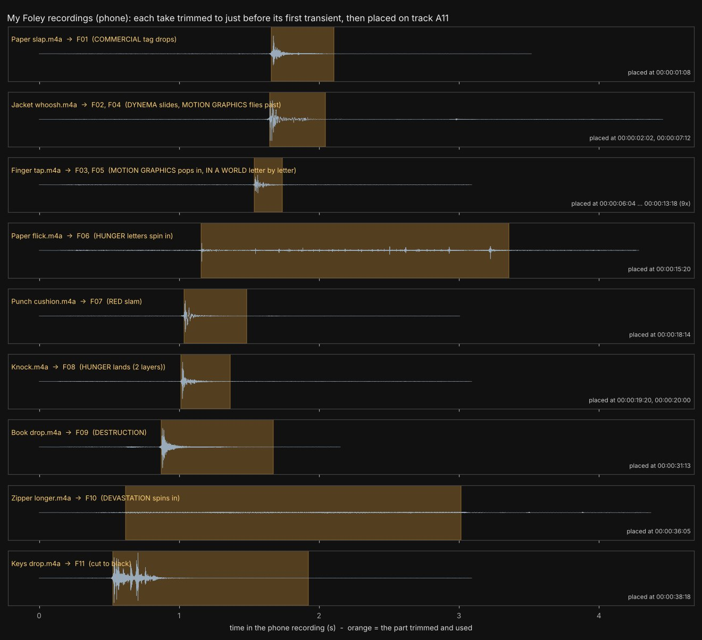
| Code | Picture moment | Timecode | My recording | Clip volume |
|---|---|---|---|---|
| F01 | COMMERCIAL tag drops | 00:01:08 | Paper slap.m4a | -5.7 dB |
| F02 | DYNEMA slides | 00:02:02 | Jacket whoosh.m4a | -11.2 dB |
| F03 | MOTION GRAPHICS pops in | 00:06:04 | Finger tap.m4a | -12.4 dB |
| F04 | MOTION GRAPHICS flies past | 00:07:12 | Jacket whoosh.m4a (same take as F02) | -11.2 dB |
| F05 | IN A WORLD letter by letter | 00:12:07 → 00:13:18 (8×) | Finger tap.m4a (one take, placed 8 times) | -10.4 dB |
| F06 | HUNGER letters spin in | 00:15:20 | Paper flick.m4a | +0.8 dB |
| F07 | RED slam | 00:18:14 | Punch cushion.m4a | -9.0 dB |
| F08 | HUNGER lands (2 layers) | 00:19:20, 00:20:00 | Knock.m4a (one take, placed twice) | -8.9 dB |
| F09 | DESTRUCTION | 00:31:13 | Book drop.m4a | -6.2 dB |
| F10 | DEVASTATION spins in | 00:36:05 | Zipper longer.m4a | +5.6 dB |
| F11 | cut to black | 00:38:18 | Keys drop.m4a | -10.9 dB |
I recorded the Foley on my phone in a quiet room, close to each source: paper slapped on a desk, a jacket flap, a finger tap, page flicks, a punch into a cushion, a knuckle knock, a book dropped flat, a zipper and a set of keys. Each take is trimmed to just before its first transient so the hit lands on the exact frame it is placed on.
I didn’t record a pen click, so the finger tap stands in for MOTION GRAPHICS popping in (F03). Some takes do more than one job: the jacket is used twice, one finger tap is placed eight times for the letters of IN A WORLD, and one knock twice for HUNGER.
In Premiere the Foley sits on its own track (A11), with a Highpass at 100 Hz on every clip to cut phone handling rumble and the volume set per sound. It shows most in the quiet moments: the IN A WORLD letter taps, the zipper on DEVASTATION and the keys on the cut to black. On the big hits (RED, DESTRUCTION) it sits under the SFX as texture.
The first final export peaked at -2.2 dBFS on the RED slam, over the brief’s -3 dB limit, because the cushion punch stacked on top of the cinematic hit and the metal hit. I turned the punch (F07) down 3 dB and the knock (F08) down 2 dB with Audio Gain and re-exported. It now peaks at -3.9 dBFS.
Iterative process
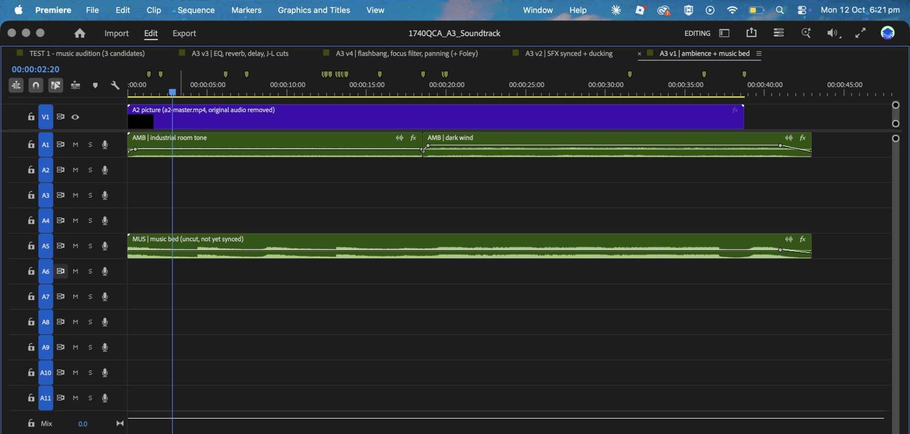
v1 is just ambience and the music bed. I laid the music from frame 0 at one level without cutting it to picture, so its first hit comes about half a second before DYNEMA slams in and the later hits drift away from the cuts. With no SFX the type moves in silence.
Measured: peak -8.1 dBFS, -19.4 LUFS.
In v2 I cut the music into five segments so its hits land on DYNEMA (0.58 s), the cut to white (4.33 s) and MEDIA (8.75 s), with a 1 s silence before the RED slam, the drop under the DEVASTATION spin and the last hit on the cut to black.
I added 20 SFX placements (16 different sounds) from the sync map, plus the texture layers: projector, tinnitus and heartbeat.
Volume is keyframed on every clip. The music ducks 5–6 dB under IN A WORLD and the HUNGER landing, and 12 dB under BUILT UPON so the heartbeat carries it. Every clip has fades. Measured: peak -3.3 dBFS, -21.0 LUFS.
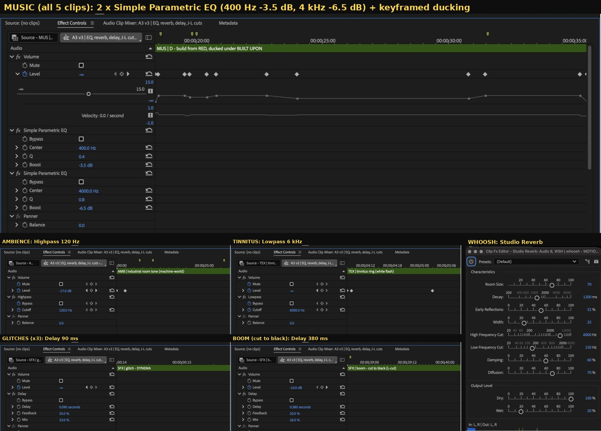
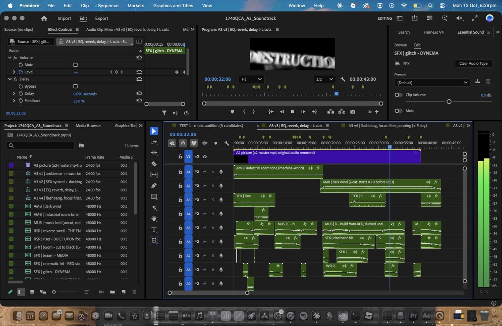
v3 is the mixing pass. Two Simple Parametric EQs on all five music clips: a wide 3.5 dB cut at 400 Hz to clear the mud, and a 6.5 dB cut at 4 kHz to make room for the whooshes and Foley. My first EQ (narrow cuts copied from the prototype) changed the export by only about 1 dB, so I widened the Q, deepened the cuts and measured again: about 2–4 dB less in the 3–5 kHz band than v2.
Highpass at 120 Hz on both ambience beds so they don’t muddy the impacts, and Lowpass at 6 kHz on the tinnitus to soften it. Studio Reverb on the metal hit (1.6 s), the MOTION GRAPHICS whoosh (1.2 s) and the DEVASTATION reverse whoosh (2 s). Delay at 90 ms on the glitches for a stutter, and 380 ms on the final boom.
J-cut: the dark wind starts 0.7 s before the RED cut, so you hear the new world before you see it. L-cut: the boom, music and ear ring carry on over black for about 4 s after the picture ends. Crossfades smooth the joins in the music.
Two things I learned the hard way. A Premiere track can only hold one clip at a time, so the J-cut wind, the tinnitus over the projector and two overlapping whooshes each needed their own track (A2, A4, A9). And checking the export against the plan showed 3.5–4.3 s was 11 dB too quiet: a one-frame fade on the COMMERCIAL reverse whoosh had collapsed into a single 0 keyframe and muted it. I fixed it in Effect Controls and re-exported v2–v4.
Level check: peak -4.3 dBFS, -21.3 LUFS, no clipping.
Decisions & tests (v4)
Each decision below was tested A/B: the same seconds of picture with the old sound, then the new one.
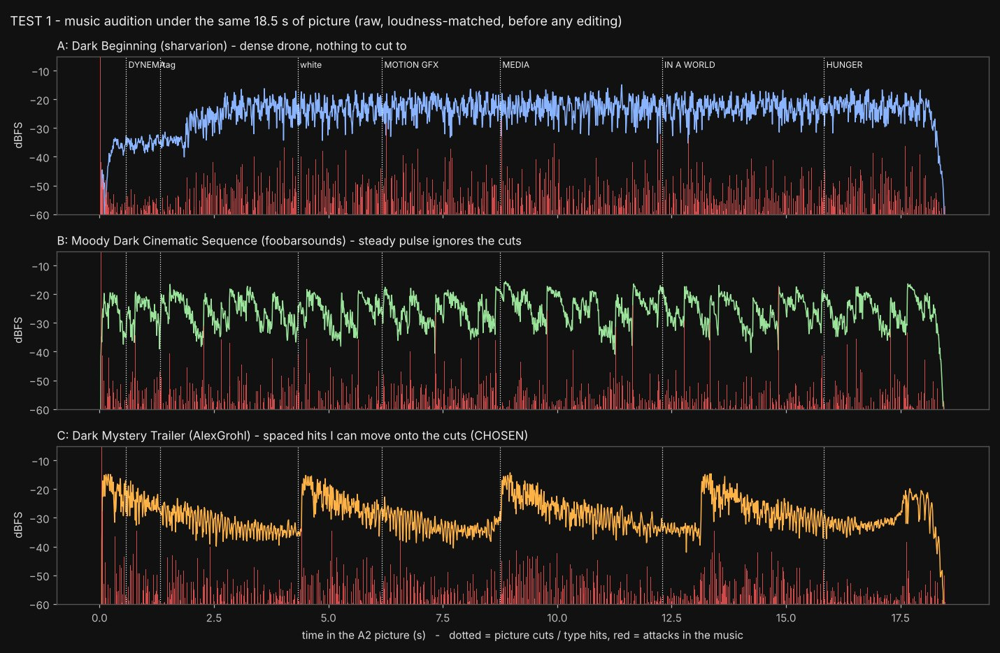
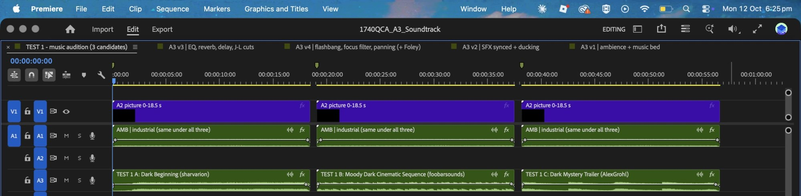
A, Dark Beginning (sharvarion): a beautiful string drone, but it has no hits, so there is nothing to sync the type slams to.
B, Moody Dark Cinematic Sequence (fooBarSounds): a steady pulse every ~0.6 s that keeps going through every cut, which fights the edit.
C, Dark Mystery Trailer (AlexGrohl): spaced trailer hits with long tails, so I could cut it into segments that land on DYNEMA, the white flash and MEDIA. I chose C.
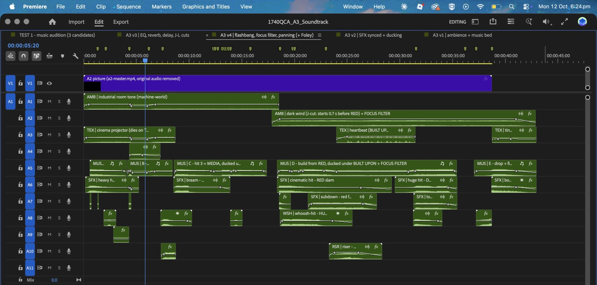
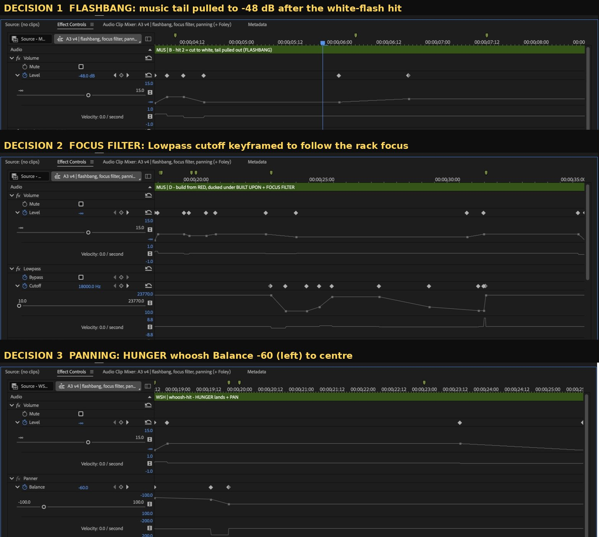
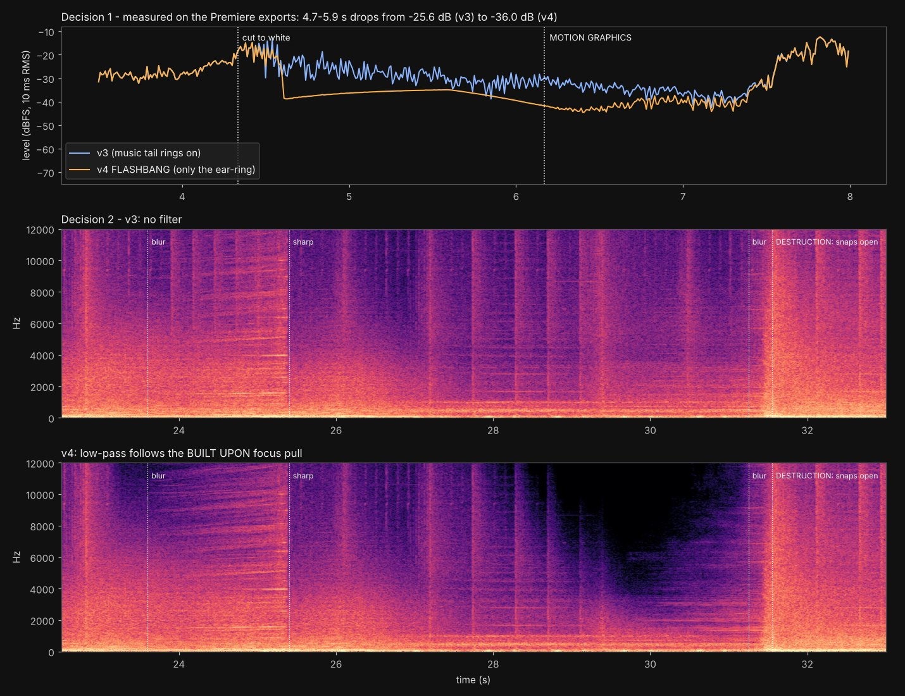
Decision 1, flashbang (4.33–6.2 s). The cut to white is a sensory overload moment, so after the hit everything (music tail, room tone, projector) drops away and only the tinnitus ring is left until MOTION GRAPHICS appears. Measured: 4.7–5.9 s drops from -25.6 dB in v3 to -36.0 dB in v4. The silence makes the next hit feel bigger.
Decision 2, focus filter (23–31.5 s). BUILT UPON racks in and out of focus, so a keyframed Lowpass on the music, wind and heartbeat follows it: 18 kHz down to 400 Hz while blurred, up to 15 kHz when sharp, back down to 450 Hz, then snapping open on the DESTRUCTION flash. Measured: the spectral centre at 30–31 s drops from about 1,530 Hz to 390 Hz, so the sound goes out of focus with the image.
Decision 3, panning. Panner Balance keyframes on the three whooshes where the type moves sideways: IN A WORLD warping out, the HUNGER letters flying in from the left and DEVASTATION spinning right to left. I chose not to pan the zoom-through moves (MOTION GRAPHICS flying past camera, the light flash), because they move towards the viewer rather than sideways and panning them felt wrong.
The panning is subtle in the full mix because the impacts and music sit on top of the whooshes, so it works best on headphones. It’s the thing I’d push further with more time.
Final: Foley added
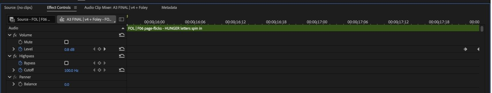
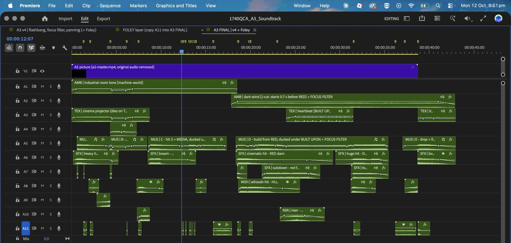
Final motion design
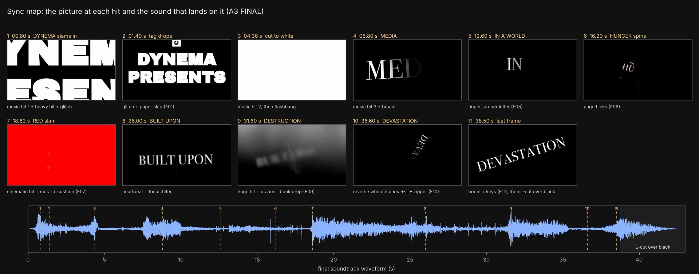
Credits & licences
All third-party audio is from Pixabay under the Pixabay Content License (free use, attribution not required but given here). Search was filtered to ‘Authentic only’, which excludes AI-generated content. The picture is my own A2 work.
| Layer | Title | Creator | Source | Licence | Used for | Proof |
|---|---|---|---|---|---|---|
| Music | Dark Mystery Trailer (Taking Our time) | AlexGrohl | Pixabay | Pixabay Content License | Music bed, cut into five segments so its hits land on the picture. Note: track is Content ID registered. | screenshot |
| Ambience | industrial-ambience | Astounded (Freesound) | Pixabay / freesound_community | Pixabay Content License | Room tone for the first half (0:00 to the RED cut) | screenshot |
| Ambience | Dark Wind | tec_studio (Freesound) | Pixabay / freesound_community | Pixabay Content License | Ambience from the RED cut to the end | screenshot |
| Texture | Cinema-Projector | Dr. Macak (Freesound) | Pixabay / freesound_community | Pixabay Content License | Projector rattle 0:00 to THE END OF MEDIA | screenshot |
| Texture | Tinnitus | Klangkobold (Freesound) | Pixabay / freesound_community | Pixabay Content License | Ear-ring after the white flash and after DEVASTATION | screenshot |
| Texture | Real heartbeat sound | under_the_hood (Freesound) | Pixabay / freesound_community | Pixabay Content License | Heartbeat under BUILT UPON | screenshot |
| SFX | Heavy Cineamtic Hit | LordSonny | Pixabay | Pixabay Content License | DYNEMA PRESENTS slam | screenshot |
| SFX | TV glitch | humanhasbeenneutralized (Freesound) | Pixabay / freesound_community | Pixabay Content License | Three short glitch cuts in the opening | screenshot |
| SFX | Fast Whoosh | StudioKolomna | Pixabay | Pixabay Content License | DYNEMA slides; IN A WORLD warps out | screenshot |
| SFX | Cinematic Whoosh Reverse | LordSonny | Pixabay | Pixabay Content License | COMMERCIAL into white; DEVASTATION spin-in | screenshot |
| SFX | Whoosh Cinematic | LordSonny | Pixabay | Pixabay Content License | MOTION GRAPHICS flies past | screenshot |
| SFX | Cinematic Reverse | LordSonny | Pixabay | Pixabay Content License | Reverse swell THE END OF into MEDIA | screenshot |
| SFX | Disturb - Trailer Impact, Dark, Cinematic Braam | BryanSantosBreton | Pixabay | Pixabay Content License | MEDIA braam | screenshot |
| SFX | Cinematic Hit | LordSonny | Pixabay | Pixabay Content License | RED slam | screenshot |
| SFX | Metal Hit 10 | floraphonic | Pixabay | Pixabay Content License | Metal layer on the RED slam | screenshot |
| SFX | Whoosh Hit | LordSonny | Pixabay | Pixabay Content License | HUNGER letters fly in and land | screenshot |
| SFX | SFX - Braam, Subdown with Intense Drop | Fronbondi_Skegs | Pixabay | Pixabay Content License | Sub-down as the red fades to black | screenshot |
| SFX | Riser (7) | u_1pruylktlg | Pixabay | Pixabay Content License | Riser into the BUILT UPON focus pull | screenshot |
| SFX | Long Whoosh | LordSonny | Pixabay | Pixabay Content License | Light flash before DESTRUCTION | screenshot |
| SFX | Aggressive Huge Hit Logo | Alex_Kizenkov | Pixabay | Pixabay Content License | DESTRUCTION hit (its build-up works as a riser) | screenshot |
| SFX | Biodynamic - Impact, Braam, Tonal, Dark | BryanSantosBreton | Pixabay | Pixabay Content License | Tonal layer under DESTRUCTION | screenshot |
| SFX | BOOM Geomorphism | Cinematic Trailer Sound Effects | SUBMORITY | Pixabay | Pixabay Content License | Final boom on the cut to black | screenshot |
| Music (test only) | Dark Beginning | sharvarion | Pixabay | Pixabay Content License | TEST 1 music audition only (candidate A, rejected); not in the final | screenshot |
| Music (test only) | Moody Dark Cinematic Sequence | fooBarSounds | Pixabay | Pixabay Content License | TEST 1 music audition only (candidate B, rejected); not in the final | screenshot |
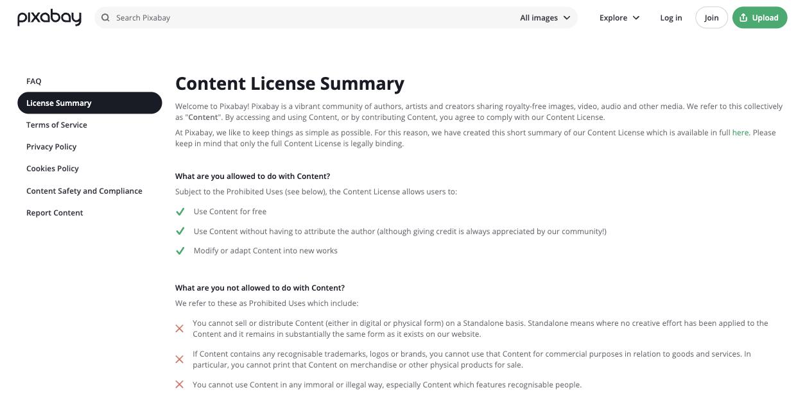
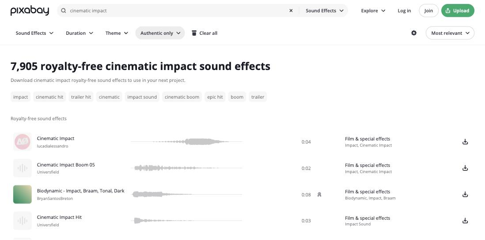
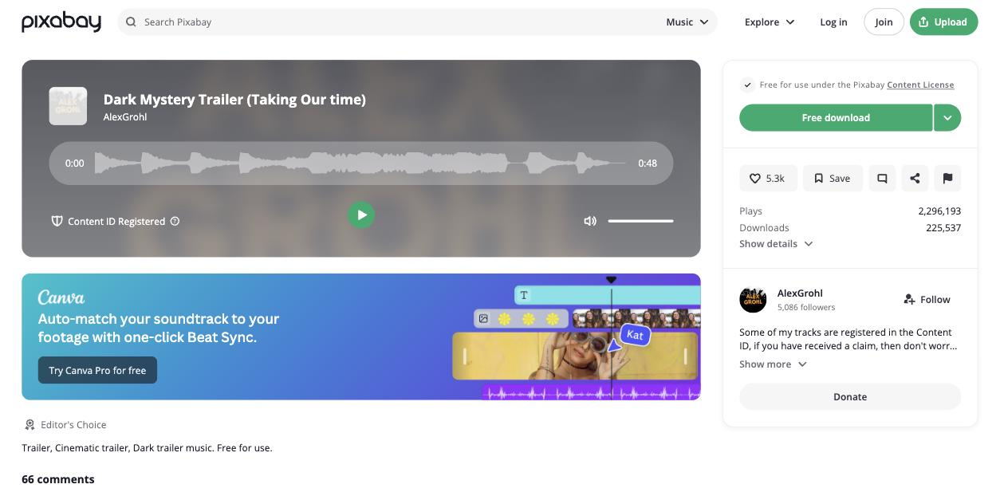
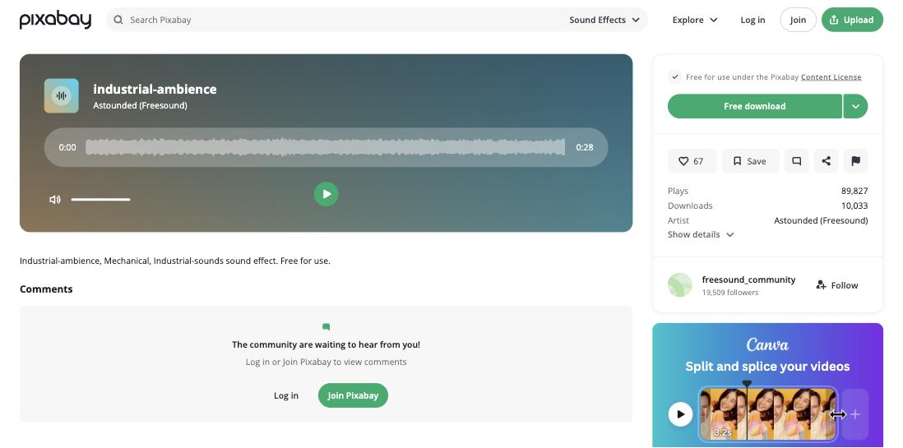
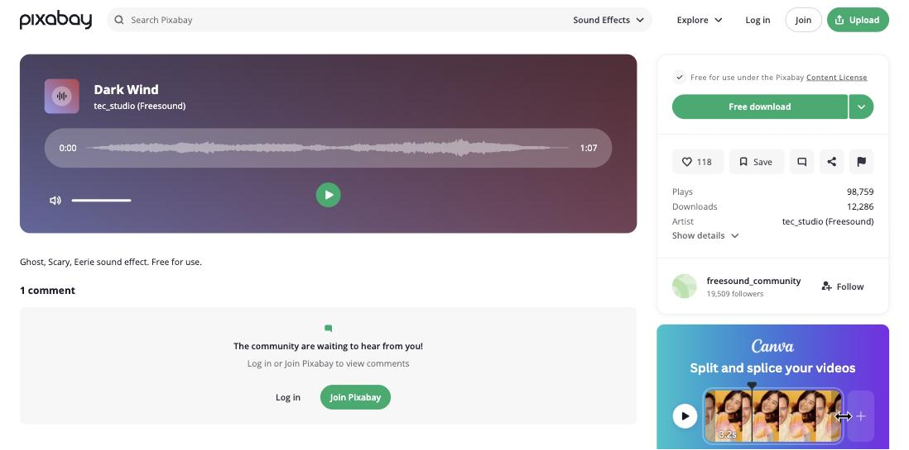
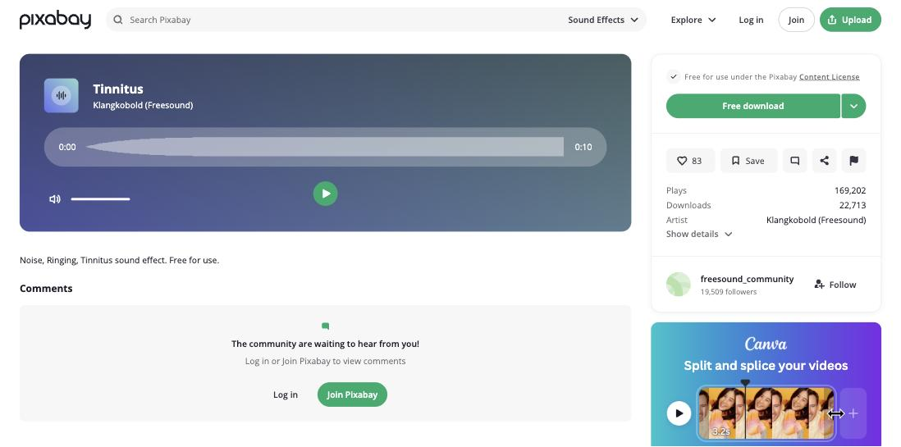
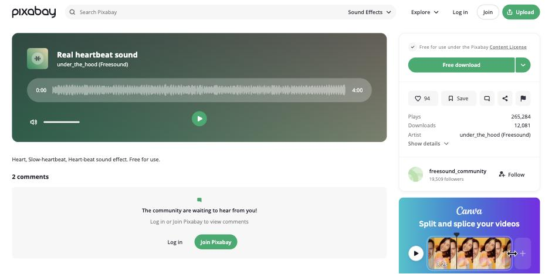
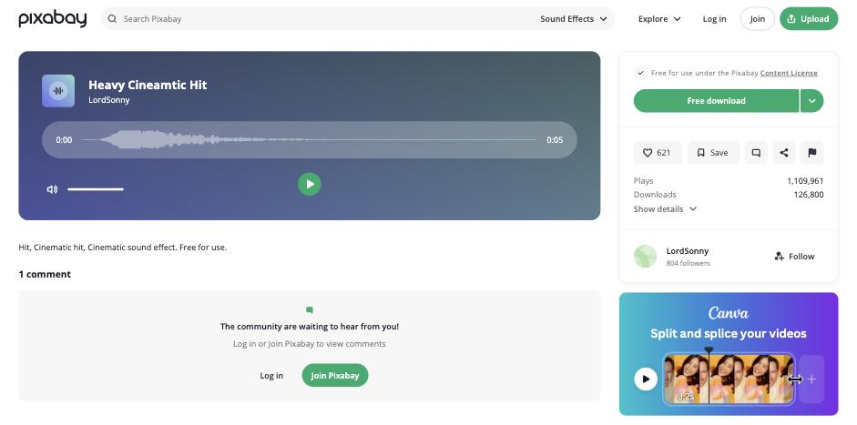
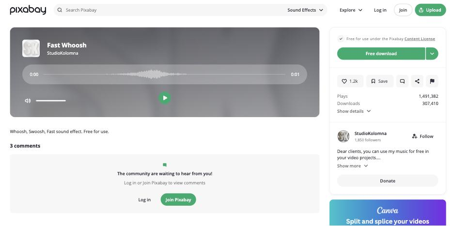
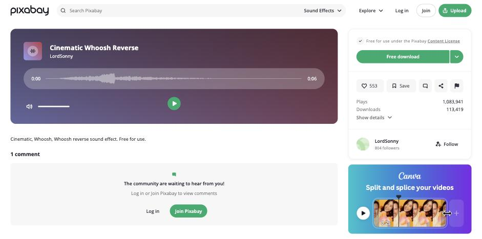
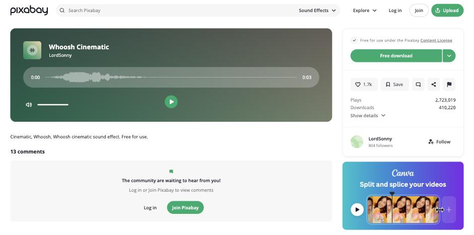
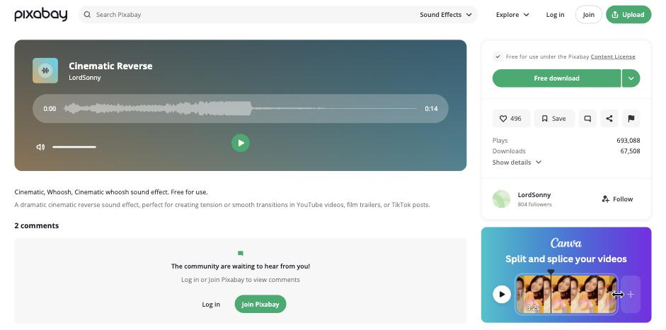
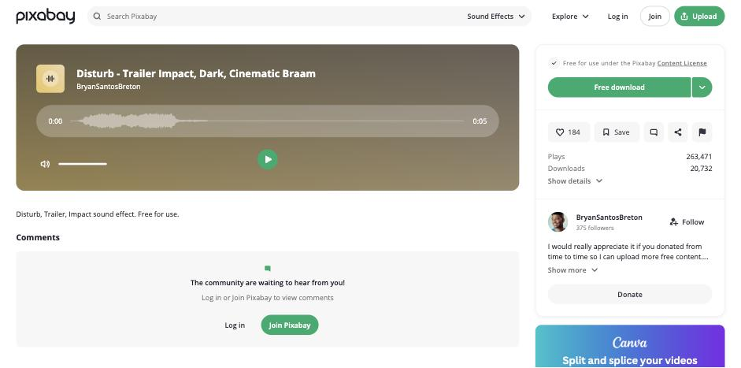
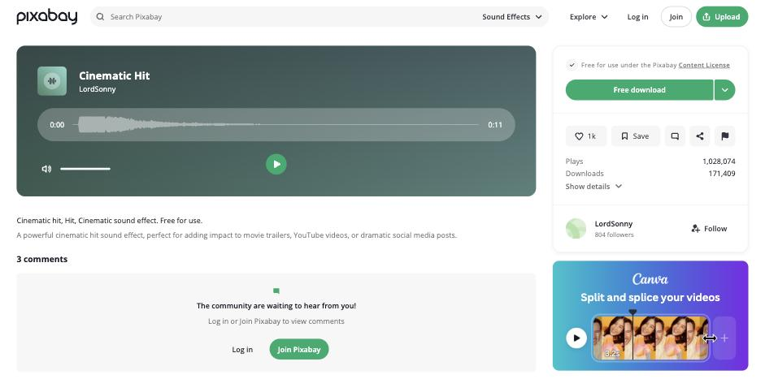
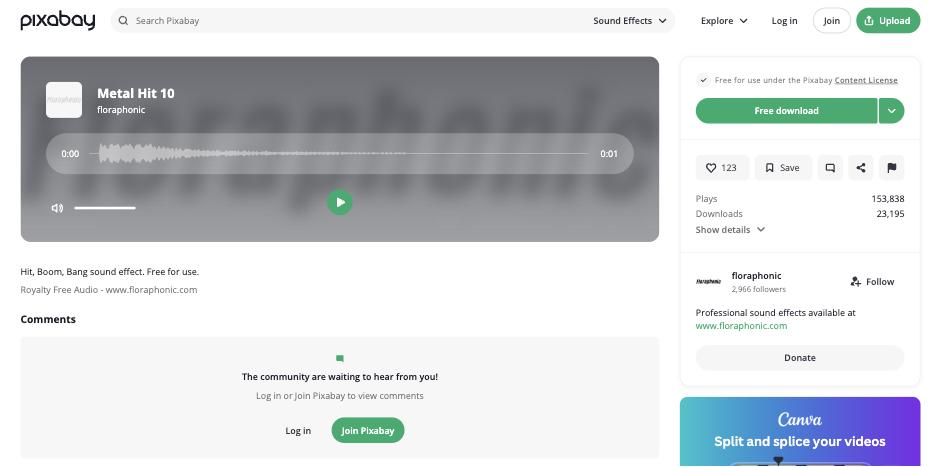
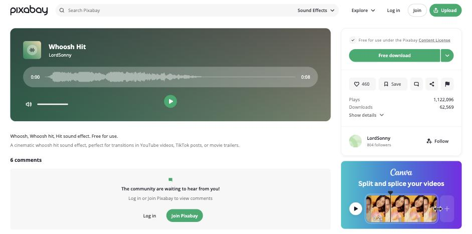
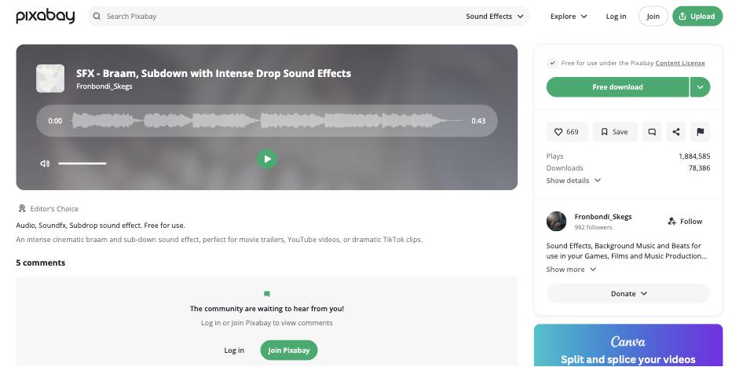
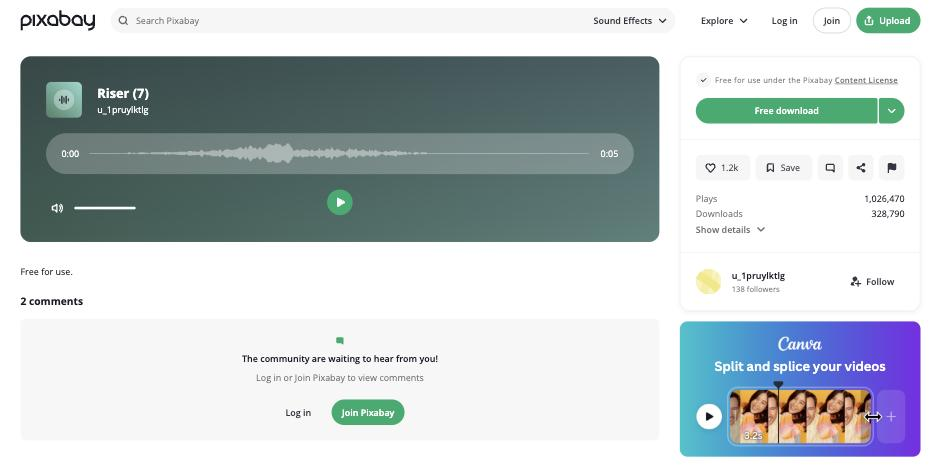
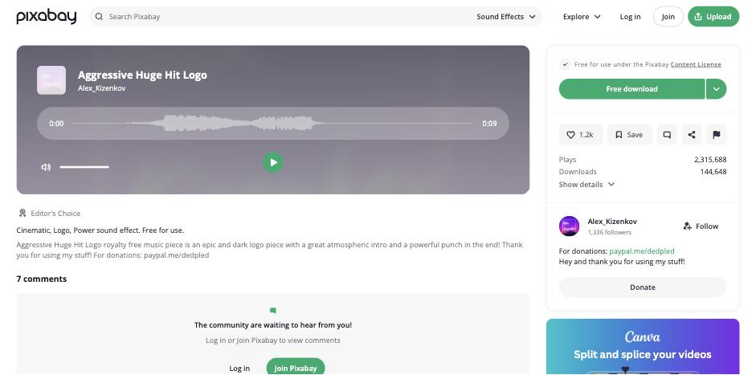
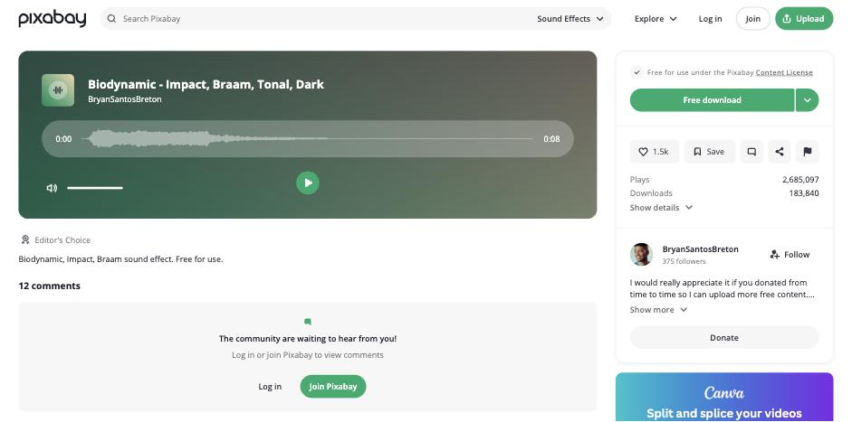
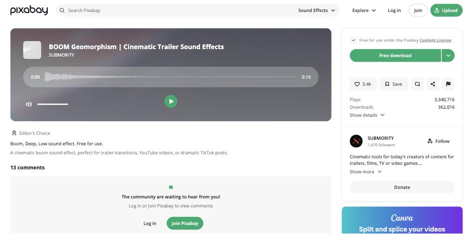
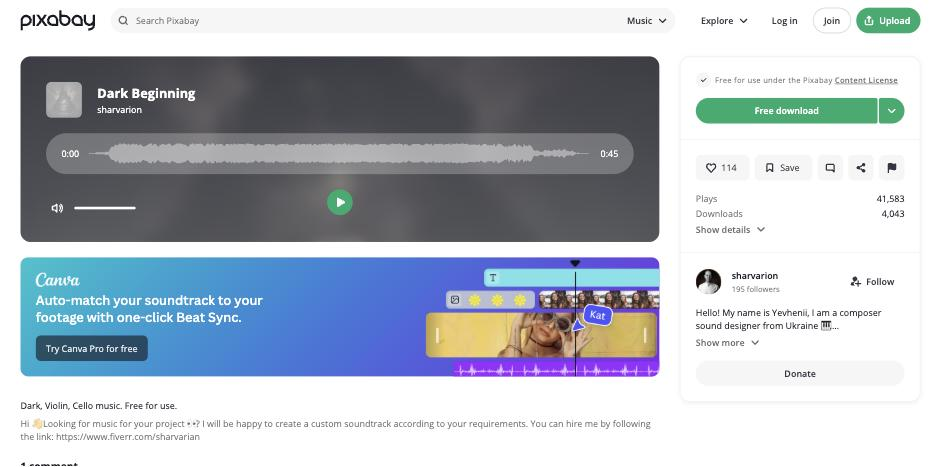
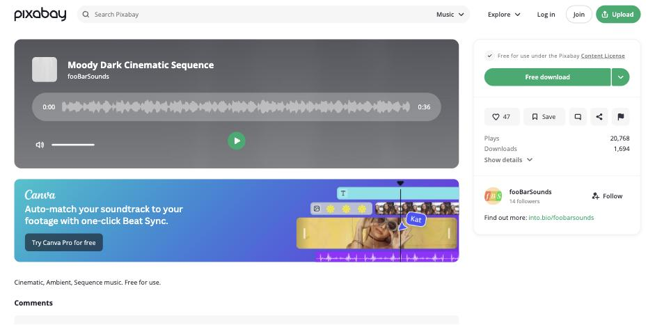
Reflective report
My piece is a dark dystopian title sequence built on the trailer line “IN A WORLD”. Kyle Cooper’s Se7en titles shaped my sound most, syncing a scratchy industrial track to jittery type and cuts (Radatz, 2012), which I turned into hits and glitches on every type slam. Imaginary Forces’ Stranger Things titles use a slow, minimal synth build (Perkins, 2016), which shaped my slower half under BUILT UPON.
My first version used one uncut music track, so its first hit came half a second before DYNEMA. In v2 I cut it into five pieces so the hits landed on DYNEMA, the flash and MEDIA. I also auditioned three music tracks side by side for the one with spaced hits. Cutting the music to picture made the biggest difference, as it was the first time sound and type hit together.
Sync is strongest on the DYNEMA slam, the RED cut with the wind leading in, and my finger tap on each letter of IN A WORLD. The weakest parts are BUILT UPON, which relies on texture more than hits, and my diegetic Foley getting buried under the non-diegetic hits on RED and DESTRUCTION, so I would add hits to BUILT UPON and bring the Foley up.
I keyframed and ducked the music under the quieter titles, with a 4 kHz EQ cut making room for the whooshes and Foley. My first final peaked at -2.2 dB, over the brief’s -3 dB limit, as the cushion punch stacked on RED, so I turned the punch down 3 dB, bringing the peak to -3.9 dB. With more time I would make the panning stronger.
The main thing I worked out myself was to check the export, not just the timeline, as a one-frame fade had silently muted a whoosh, found only when the export measured 11 dB too quiet. I also learned effects can be keyframed, which is how the focus filter works. Next I want to learn Audition to clean up phone recordings.
References
- Perkins, W. (2016, August 9). Stranger Things (2016). Art of the Title. https://www.artofthetitle.com/title/stranger-things/
- Radatz, B. (2012, July 10). Se7en (1995). Art of the Title. https://www.artofthetitle.com/title/se7en/